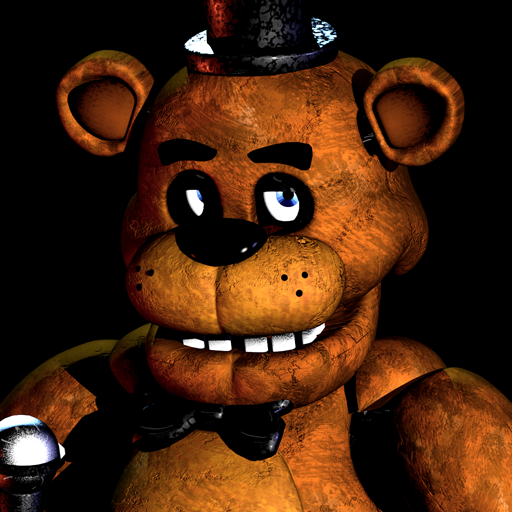
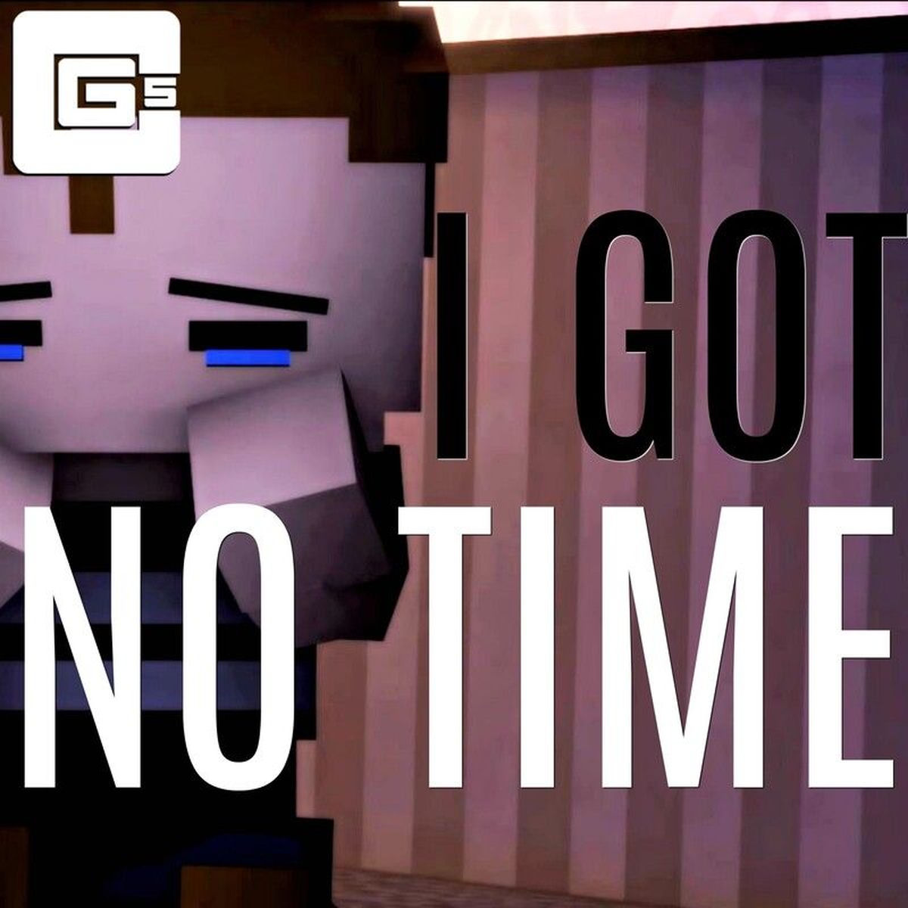

2017: From 12 to 6.

Five Nights at Freddy's
Fenómeno de horror indie que generaba jumpscares virales, memes y reacciones exageradas en YouTube. Creado por Scott Cawthon.

I Got No Time (Remix) - Single
Remix del tema original de The Living Thombstone